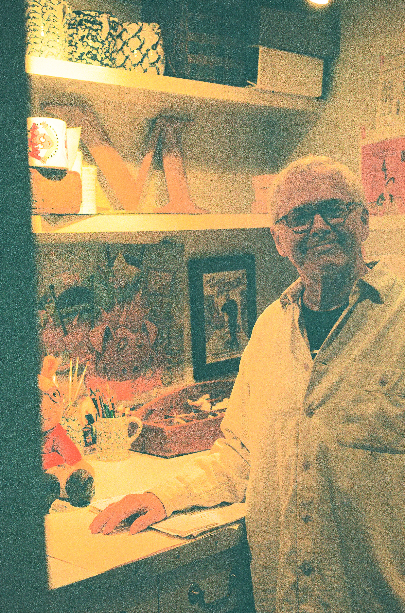

Where did the idea of Arthur come from?
It was a bedtime story that I told my son Tolin on a very bad day. I had just lost my teaching job in Boston and came home that night and just wanted to collapse and he said “tell me a bedtime story” and I was really coming up empty so I asked “so what should I tell you a story about?” and he said “tell me a story about a weird animal” and so I guess I kind of starting thinking alphabetically and aardvark came to mind. So then he wanted to know his name and then he asked me to draw him a picture, and I thought this is so much fun, why can’t I do this for a job? And at the time I was sort of doing freelance work for textbook companies in Boston and one of my editors there said “you should really see this editor at the Atlantic Monthly Press she likes to discover new authors and her name is Emily Macleod”.
I got an appointment with her and I was kind of terrified. I remember putting my portfolio together from art school and I took it in and she looked through it and she said “Ah, you have to let go of all this and forget all this technique you learned” and I thought, “What?! I spent all these years in art school learning this technique!” and she said “concentrate on the characters and their emotions and their expressions” because I took this little story I had, this little bedtime story about an aardvark to her and she said “it needed a lot of work” and she was so right because what I was doing was using two paragraphs to do what maybe one good sentence in a picture book could do. Because I came to understand that when you write a picture book, its its like balancing a scales you have the pictures on one side words on the other side and you’re constantly trying to bring them together and you want to come up with the most efficient way possible to uh tell your story and use your pictures to do what the words can’t do and the words should be doing what the pictures can’t do. So that was a really good lesson, and after about six months of revision she said “I think we may have a book here” and uh I cannot look at that first book “About Arthur” because it’s to me so raw it’s like going to a party in my underwear. Because it looks to me unfinished but it was a great learning experience.


Where did the TV show happen?
Oh that sort of came out of the blue. I got this call from WDBH (a Boston based TV station), they wanted to talk to me about a television show and I had turned down—they uh I had two previous television authors from network television and ya know I had no control over what would happen with my characters so I decided I didn’t want to work with them. But PBS was doing something really unique and wanted to use television and animation two very seductive forms of reaching children to make children want to read. And I thought, “This is good!” so we started to wok on this idea. And ya know I came to television feeling very insecure but I quickly learned that making a television show is not that unlike making a picture book. Because you’re using um, the same things. And ya know I had some valuable background in theater when I was in high school and college and I found that that was a really wonderful preparation for television because with a tv show you’re costuming, you’re characters, you’re designing the sets, you’re writing the script. Uh, with tv you have the addition of sound and movement which is very exciting. And I also found I could reach kids with subject matter that I couldn’t get get a publisher to write a or publish a picture book such as “asthma”, “disaster at a school after 9/11”….
And that was a really great thing about television and early on I think it was the first episode where we had a guest star and we had Fred Rogers as our guest star.